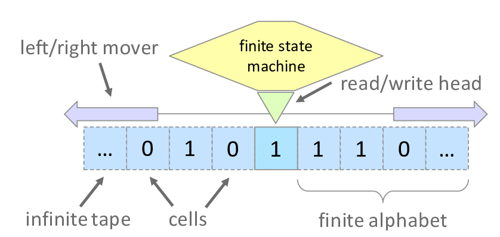

Nicolas Andreas Jäckel - Projetos
Sistemas Ciber Físicos

Máquina de Turing: um dos conteúdos dessa matéria foi a Máquina de Turing, ela é um modelo abstrato de um computador, que se restringe apenas aos aspectos lógicos do seu funcionamento (memória, estados e transições), e não a sua implementação física. Numa máquina de Turing pode-se modelar qualquer computador digital.
Arquitetura de Von Neumann: aprendi também sobre a arquitetura de computadores de Von Neumann que é uma arquitetura de computador que se caracteriza pela possibilidade de uma máquina digital armazenar seus programas no mesmo espaço de memória que os dados, podendo assim manipular tais programas. Esta arquitetura é um projeto modelo de um computador digital de programa armazenado que utiliza uma unidade de processamento (CPU) e uma de armazenamento ("memória") para comportar instruções e dados.
REDES: aprendi sobre redes de computadores e a internet em geral. Esse assunto foi muito importante para mim particularmente, pois trabalho em uma empresa onde temos servidores de cliente e máquinas as quais se comunicam com esses servidores em locais diferente, ou seja, é feito o uso de VPN. Portanto foi muito bom para eu entender melhor o meu ambiente de trabalho
Memórias: nesse conteúdo foi ensinado como funcionam as memórias voláteis e não voláteis e seus tipos. A memória RAM é usada aleatoriamente e é apagada quando não se tem energia (volátil), outras memórias como ROM são usadas apenas para a leitura do sistema operacional. Existem também os discos HDD e os SSD, mas são usados como armazenamentos de longo prazo e que são mantidos mesmo sem energia (não volátil).
Sistemas Operacionais: é o conjunto de programas que gerenciam recursos, processadores, armazenamento, dispositivos de entrada e saída e dados da máquina e seus periféricos, sendo os sistemas operacioanis mais famosos o Windows, MacOS e Linux.